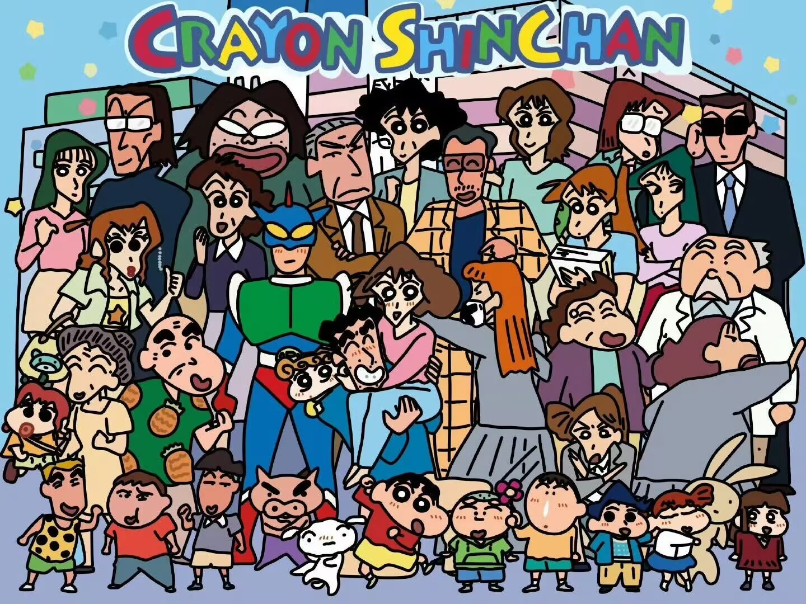

<!DOCTYPE html>
<html lang="zh-Hans"></html>
<head>
    <meta charset="utf-8">
    <meta http-equiv="X-UA-Compatible" content="IE=edge">
    <meta name="viewport" content="width=device-width, initial-scale=1.0">
    <title>蜡笔小新</title>
    <link rel="stylesheet" href="style.css">
    <style>
        .main {
				width: 100%;
				height: 850px;
				display: flex;
				padding: 20px 1%;
				justify-content: space-between;
			}
			img:hover {
				transition: all .3s;
				box-shadow: 6px 4px 6px slategray;
				cursor: pointer;
				transform: rotateZ(3deg);
				border: 20px solid #fff;
			}
			.main img {
				width: 45%;
				height: 100%;
			}
			
			.main .main_right {
				width: 54%;
				padding: 30px;
			}
			
			.main .main_right .msg {
				width: 230px;
				height: 50px;
				text-align: center;
				font-size: 23px;
				color:pink;
				line-height: 50px;
				background-color:pink;
				margin-bottom: 20px;
			}
			
			.main .main_right p {
				font-size: 27px;
				padding-bottom: 20px;
				color:olive
			}
			.peoples {
				width: 100%;
				height: 850px;
				display: flex;
				padding: 20px 1%;
				justify-content: space-between;
			}
			.peoples img {
				width: calc 100%;
				margin: 0px .2%;
			}
		</style>
    </style>
	<a href="https://spring469.github.io/408/宿舍主页.html">返回宿舍主页</a>
</head>
<body>
   
   <div class="nav">
		<a href="index.html" class="active">网站首页</a>
		<a href="02角色介绍.html">角色介绍</a>
		<a href="03作品特色.html">作品特色</a>
		<a href="04剧情简介.html">剧情简介</a>
		<a href="05动画电影发展.html">动画电影发展</a>
   </div>
   <div class="title">蜡笔小新</div>
   <div class="main">
		
		<div class="main_right">
			<div class="msg">漫画创作</div>
			<p>主创思路:臼井仪人先生说，之所以会创造出小新这个形象，是因为他在观察自己的孩子的时候，发现小孩子的想法往往非常独特，以至于作者被小孩的世界所吸引。所有的小孩都有乖巧和调皮的两面性。这种两面性对作者来讲是十分有趣的。反过来作者正是在自己的作品中反映了这一两面性。”</p>
			<p>漫画定位：主人公野原新之助是个性张扬搞笑活泼的代表性动画人物之一，内容是平实地描写日本一户核心家庭日常生活的写照，而笑点多半是小新总是搞不清楚状况而出的差错或是惹人发怒的情形；但事实上小新有时也会展现出非同年龄层小孩的表现，就好比跟朋友间的坚定友谊，或在家人、社区，甚至是春日部面临危机时，都展现出超乎常人的勇气与智慧。</p>
			<p>相关成就：臼井仪人(1958年4月21日-2009年9月11日),是一位日本男性漫画家。出生于静冈县静冈市,成长并住于埼玉县春日部市,1977年毕业于琦玉县某县立高中,毕业后一边在超市打工一边上设计学校念书。1979年就职于某广告代理公司,1985作品依靠《堕落商店store物语》获漫画Action新人奖,1987年创作作品《OL Gumi》。1990年开始在漫画Action上连载《蜡笔小新》,并被称为“小新之父”,通过小新的“童言无忌”表达了社会百态与人世辛酸。</p>
		</div>
   </div>
   <div class="title">人物相册</div>
   <div class="peoples">
	   
   </div>
   
   
   <div class="footer">
	   蜡笔小新 @ 版权所有 -2024 
   </div>
</body>
</html>
